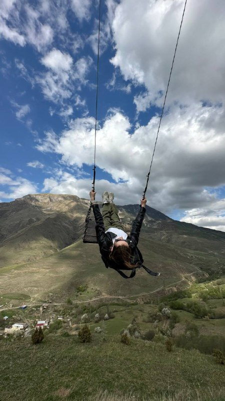
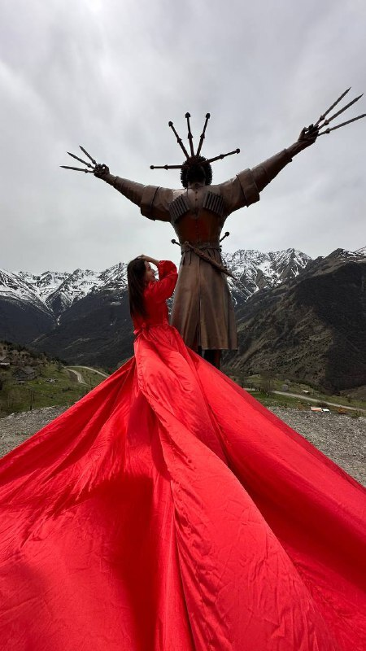
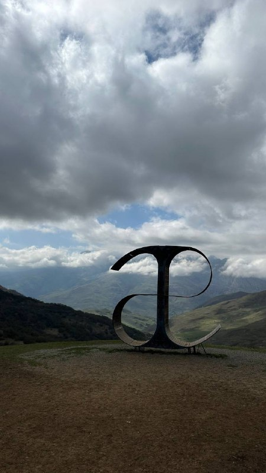

опыт гида в маршрутах по природе, истории и культуре Осетии
Джип-туры по Северной Осетии
О нас
Мы показываем Осетию через дорогу, тишину и места, где хочется задержаться
Prosto_Dimon организует индивидуальные и групповые джип-туры по Северной Осетии. В поездке важны не только точки маршрута, но и спокойный темп: остановиться у ущелья, подняться выше облаков, попробовать местную кухню и услышать историю места без спешки.
Берем на себя трансфер, дорогу, сопровождение и связь. Вам остается выбрать настроение поездки: первое знакомство с Аланией, высокогорная Дигория или маршрут по более тихим и таинственным местам.
прием заявок, связь и помощь с выбором поездки
встреча в аэропорту, выезд из отеля и обратная дорога
Маршруты
Три характера Осетии
Выберите настроение поездки: первое знакомство с Аланией, высокогорные дороги Дигории или тихие ущелья с точками, куда хочется возвращаться.

Хит для первого дняЗолотое кольцо Алании
первое знакомство
Маршрут для первого большого знакомства с Осетией: ущелья, древние селения, некрополь Даргавс, водопады и дорога, где каждая остановка просится в кадр.
до 4 гостей
трансфер
гид 10+ лет
Кармадон
Даргавс
Фазикау
Мидаграбинские водопады
Кобан
от 10 000 руб.
за поездку, детали согласуем в WhatsApp
Забронировать

Самый горныйГорная Дигория
больше гор и воздуха
Высокогорные села, башенные комплексы и большие открытые панорамы. По желанию маршрут можно завершить термальным источником.
панорамы
башни и села
горячий источник
Чёртов мост
Задалеск
Донифарс
Галиат
Камунта
Садон
от 15 000 руб.
подойдёт тем, кто хочет максимум гор за день
Забронировать

Для тихих ущелийТаинственная Алания
тихие ущелья и высота
Легкий по настроению, но насыщенный день: Куртатинское и Алагирское ущелья, Цей, Мамисон и Лавочка счастья на высоте 2600 метров.
ущелья
Цей
Мамисон
Куртатинское ущелье
Алагир
Цей
Мамисон
Тиб
Лисри
от 12 000 руб.
спокойный темп, много воздуха и остановок
Забронировать
Включено
Что входит в стоимость тура?
Все базовое для спокойной поездки уже собрано в программе: дорога, сопровождение, быт и забота команды на маршруте.
Проживание
Проживание в отелях, коттеджах в горах.
Транспорт
Комфортабельные автомобили для Вашего активного отдыха.
Питание
Блюда национальной кухни.
Опытные гиды
Экскурсовод-гид с опытом более 10 лет, в увлекательном формате познакомит Вас с культурой, историей и природой Осетии.
Трансфер
Полное сопровождение, автомобили повышенной проходимости, встретим Вас в аэропорту и отвезем обратно.
Сервис
В нашей команде работают настоящие профессионалы! Мы относимся с вниманием и заботой к каждому.
Как заказать поездку?
Выбрать понравившийся тур/поездку
Если Вам сложно определиться с выбором, пройдите опрос на нашем сайте и наши менеджеры подберут подходящую поездку, исходя из Ваших запросов.
Свяжитесь с менеджером
Позвоните или напишите на указанные номера. Если Вы прошли опрос, мы свяжемся с Вами сами.
Согласуйте все детали
Определитесь с датой и временем поездки.
Отправляйтесь в долгожданное путешествие
В день поездки мы встречаем Вас, сопровождаем по маршруту и остаемся рядом на каждом этапе.